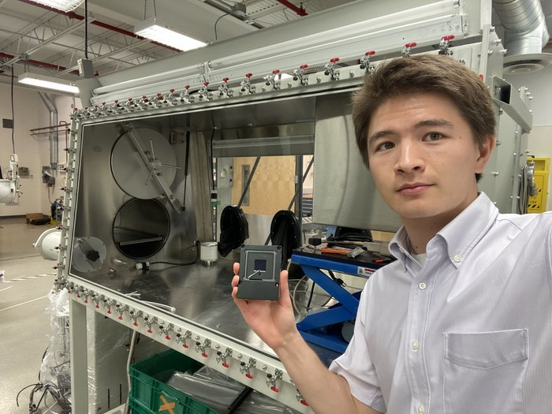

takaji robson
research engineer with a strong foundation in applied physics, hardware and software development, and scientific troubleshooting. specialized in perovskite solar cells, thin-film semiconductors, and photovoltaic device physics. experienced in designing and operating custom r&d test systems, rapid prototyping of hardware and pcbs, scientific computing, and deploying machine learning & ai workflows to accelerate sustainable energy technologies from concept through validation. currently physics at middlebury college. previously research at argonne national laboratory (sector 19, x-ray science division), r&d engineering at verde technologies, and software engineering at nuvve in osaka, japan. on the side: makerspace hydroponics, middruns leader, competitive gaming, jiu-jitsu, chess, and languages (japanese n3, portuguese, spanish).

reach out: takaji.robson@gmail.com
a few things i've done
research & engineering experience
argonne national laboratory — research intern (suli), x-ray science division (sector 19) | lemont, il (summer 2026)
title: high-resolution structural mapping of perovskite thin films. resolving (111) and (001) microstructures via automated nano-xrd analysis and a cli-based computer vision pipeline.
• developed the ANLCVEVOLVE python package to automate data compression, bragg angle alignment, peak finding, feature contouring, gui visualization, and automated report generation for large nanoscale x-ray diffraction datasets.
• implemented ai-assisted workflow automation to streamline experimental data processing, improve reproducibility, and accelerate laboratory throughput.
• investigated structural degradation of perovskite crystals during nano-xrd measurements by comparing (001) and (111) crystal planes, identifying preferred crystal orientations and feature sizes across photovoltaic devices.
[ anlcvevolve repo ] [ argonne ]
verde technologies — junior r&d engineer | burlington, vt (april 2025 – may 2026)
• designed and deployed automated solar testing systems (32 indoor / 16 outdoor) integrating custom pcbs, sensors, and data acquisition systems for multiplexed maximum power point (mpp) tracking and accelerated stress testing.
• trained convolutional neural networks (cnns) to detect defects in photoluminescent images of perovskite thin films.
• developed a django-based webui to accelerate experimental data collection, increasing azure database throughput by 25x while reducing analysis time by over 50%.
• deployed a cloud-based database viewer integrating an llm-powered natural language interface to generate sql queries, improving experimental data accessibility across the r&d team.
• calibrated solar simulators, configured relay systems, and integrated keithley source measure units (smus) using pyvisa across linux and windows environments.
• regularly presented experimental analysis, results, and industry research to the founder, ceo, and headrick thin film research group.
• maintained, repaired, and troubleshot lab instrumentation, including an x-ray diffractometer and glove boxes.
[ thorlabs pl repo ] [ verde tech ]
nuvve holding corp — software engineering intern | osaka, japan (jun 2023 – sep 2023)
• adapted and localized an amazon web services (aws)-based staging environment from u.s. specifications to facilitate secure and scalable battery system integration into japanese public energy markets.
• developed and tested java-based communication software utilizing a rabbitmq message broker to remotely monitor and control stationary batteries and support real-time charge/discharge commands.
• engineered a raspberry pi simulator to generate realistic operational data streams (voltage, current, state of charge) for communication protocol validation.
• developed a grafana-based dashboard for real-time visualization of battery parameters, communication status, and system performance.
[ nuvve ]
selected research & projects
senior thesis: scattering method for green's functions in separable geometries — middlebury college (2022 – 2026)
• authored a rigorous treatment of green’s functions for analytically complex coordinate systems, deriving the green's function for conical geometries using the eigenfunction expansion (scattering) method.
• applied the sommerfeld-watson transformation and kontorovich-lebedev integral representations to transform discrete angular momentum sums into continuous spectra for wedge and conical geometries.
• explored perturbation theory and hybrid semi-analytical computational methods combining analytical green's functions with finite difference methods to model wave scattering in realistic, non-separable shapes like deformed quasi-conical tips.
confocal laser scanning microscope — middlebury physics laboratory
• designed and constructed a prototype confocal laser scanning microscope capable of resolving 0.03 mm features using stepper motor raster scanning.
• integrated optical components, motion control systems, and python-based image processing with ray tracing analysis.
• evaluated and presented imaging performance metrics, quantified error margins, and proposed improvement pathways for future 3d imaging.
householder qr decomposition & ekg signal processing — numerical linear algebra
• led a matlab study of the householder qr algorithm, covering derivation, worked examples, and stress testing across matrices of varying size and condition number.
• presented workflow of ekg signal processing from deconstruction, signal acquisition, and transmission to reconstruction and analysis for wearable devices.
automated hydroponics system — middlebury makerspace
automated sensing, serial comms, database logging, and control rest api for indoor cultivation environments.
[ hydroponics repo ]
education
middlebury college, middlebury, vt — b.a. in physics (2022 – 2026)
coursework: experimental physics ii, quantum mechanics, computational physics, numerical linear algebra, electromagnetism, analytical mechanics, waves and fourier analysis, real analysis, statistical mechanics.
languages: intermediate japanese (jlpt n3), advanced portuguese, intermediate spanish.
[ middlebury ]
technical skills
programming languages: python, java, c++, sql, matlab, bash, r
scientific computing & ml: numpy, scipy, pandas, matplotlib, jupyter, pytorch, pyvisa, computer vision (opencv)
laboratory instrumentation: nano-xray diffraction (nano-xrd), xray fluorescence (xrf), photolithography, source measure units (smus), scanning electron microscope (sem), solar simulators, glove boxes
software development: flask, django, rest apis, docker, linux, windows
ai-assisted development: claude, mcp (model context protocol), llm workflow automation & tooling
hardware, engineering & cloud: arduino, raspberry pi, esp32, custom pcb prototyping, aws, azure, oracle, grafana, solidworks, autocad, revit
activities & leadership
middruns club — treasurer & run leader (fall 2024 – may 2026)
managed club funds and organized weekly running events for 180+ members.
extracurriculars & clubs
middlebury makerspace hydroponics team, jiu-jitsu club, chess club, club basketball.
